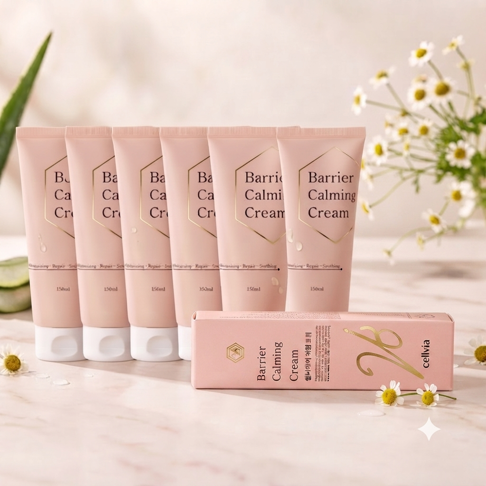

CALMING & MOISTURE CARE
乾燥しがちな素肌に
乾燥しがちな素肌に
優しく寄り添う 潤いヴェール。
デリケートなお肌に贅沢な水分補給と整肌ケアを。
ヒト幹細胞順化培養液(10,000ppm)と植物由来成分が角層の水分・油分バランスを整えます。
水分補給
Hydration
整肌
Soothing
バランス
Balancing
デイリー
Daily Care

PACKAGE バリア カーミング クリーム 150ml × 6 ea
お肌に優しく潤いを満たす4つのこだわり
乾燥によるカサつきやキメの乱れに。毎日のスキンケアで健やかな素肌環境へ導きます。
01
長時間しっとり持続する高保湿
べたつくことなく角層深くまで潤いを届け、なめらかな肌触りをキープします。
02
水分・油分のバランスケア
乾燥によって崩れがちなバランスを整え、乾燥からお肌を守る健やかな環境を育みます。
03
デリケートなお肌の整肌
外部ストレスを受けてデリケートになりがちな素肌をマイルドに保湿し整えます。
04
ご家族で使えるマイルド設計
お顔やボディの乾燥に。デイリーケアとして心地よくお使いいただける設計です。
厳選された7つのキー成分
タップして詳細をご覧ください。
01
ヒト幹細胞
培養液
02
スベリヒユ
エキス
03
トウキンセンカ
花エキス
04
ローズマリー
葉エキス
05
チャ葉
エキス
06
β-グルカン
07
ヒアルロン酸Na
Skin Harmony Index
健やかな肌へと導くトータルバランス
水分補給・整肌・油分バランス・保護膜形成・キメ整頓の5つのアプローチで基礎コンディションをサポートします。
角層への水分補給力
マイルド整肌感
バランス保持
※イメージ指標です
How To Use
毎日のスキンケアの仕上げに。優しく包み込むお手入れ。
1
TAKE AN AMOUNT
スキンケアの最後に、適量（パール1〜2粒大）を取ります。
2
APPLY GENTLY
顔の中心から外側へ、キメに沿って優しく伸ばします。
3
HAND PRESS
手のひらで顔を包み込み、温もりでなじませます。
✨
Tip: レイヤリング
乾燥が気になる目元や口元、体のかさつく部分には重ね塗りがおすすめです。密着感のある水分保護膜が形成されます。